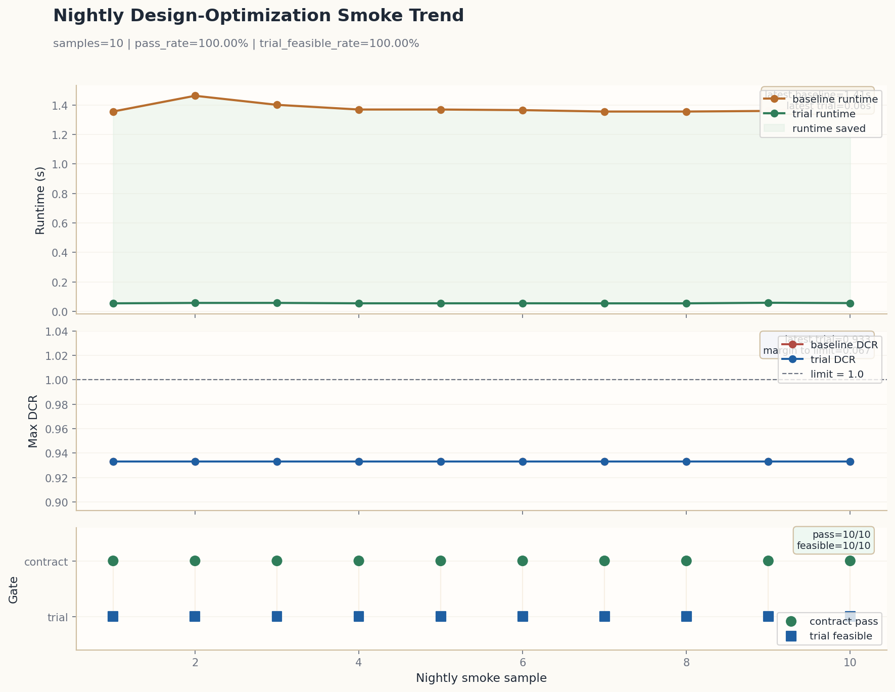
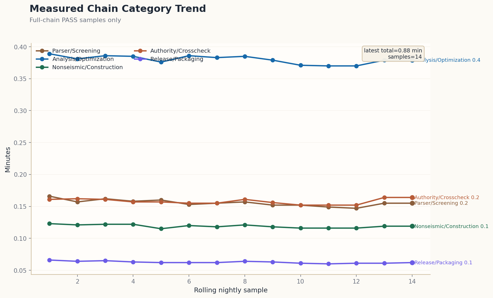

Authority-facing validation summary that brings benchmark coverage, native roundtrip evidence, release gates, and delivery-boundary signals into one premium review export.
20260422T140547Z
Generated 2026-04-22T14:05:48.342988+00:00
| Material constitutive | Material constitutive gate: PASS | concrete_damage=yes(matrix=48/48,max=1.000) | cyclic_degradation=yes(matrix=46/46,residual_max=1.914%,lib=rev2/pinch0.22/crush1.00/series=3/3@2400/wall=1/rc=2) | bond_interface=yes(matrix=48/48,bond_max=0.980) | creep_shrinkage=yes(matrix=7/7,mean=1.000/0.617) | soil_boundary_nonlinear=yes(matrix=11/11,profile=dense_sand) | device_dissipation=yes(matrix=10/10,types=3) | foundation_impedance_nonlinear=yes(matrix=19/19,links=6) | contact_link_hysteresis=yes(matrix=15/15,cats=6) | panel_zone_joint_response=yes(matrix=12/12,rows=12) | wind_dynamic_response=yes(matrix=16/16,topo=4) | track_support_viscoelasticity=yes(matrix=11/11,class=B) | vehicle_track_transient_coupling=yes(matrix=19/19,iters=1.01) | tunnel_soil_wave_attenuation=yes(matrix=13/13,dist=24) | serviceability_velocity_response=yes(matrix=8/8,pass_ratio=1.000) | construction_stage_redistribution=yes(matrix=6/6,diff=1) | joint_constraint_transfer=yes(matrix=5/5,rows=135) | aeroelastic_serviceability=yes(matrix=7/7,pass_ratio=1.000) | heterogeneous_soil_adaptation=yes(matrix=5/5,recall=1.000) | segment_joint_softening=yes(matrix=5/5,yield=53.000) | longitudinal_wave_strain_transfer=yes(matrix=5/5,strain=0.000000) | raw_pressure_field_mapping=yes(matrix=5/5,mapped=7278) | phase_assimilation_correction=yes(matrix=5/5,ratio=0.964) | multiscale_streaming_refinement=yes(matrix=5/5,chunk=16) | integrated_vibration_transfer=yes(matrix=5/5,checks=4) | resilience_ood_recovery=yes(matrix=5/5,steps=3) | boundary_absorption_nonlinear=yes(matrix=6/6,supports=2) | attention_load_localization=yes(matrix=6/6,peak=0.350) | residual_energy_stabilization=yes(matrix=7/7,solver=FIRE) | matrix=400/400 | groups=concrete_damage=48/48,cyclic_degradation=46/46,bond_interface=48/48,creep_shrinkage=7/7,soil_boundary_nonlinear=11/11,device_dissipation=10/10,foundation_impedance_nonlinear=19/19,contact_link_hysteresis=15/15,panel_zone_joint_response=12/12,wind_dynamic_response=16/16,track_support_viscoelasticity=11/11,vehicle_track_transient_coupling=19/19,tunnel_soil_wave_attenuation=13/13,serviceability_velocity_response=8/8,construction_stage_redistribution=6/6,joint_constraint_transfer=5/5,aeroelastic_serviceability=7/7,heterogeneous_soil_adaptation=5/5,segment_joint_softening=5/5,longitudinal_wave_strain_transfer=5/5,raw_pressure_field_mapping=5/5,phase_assimilation_correction=5/5,multiscale_streaming_refinement=5/5,integrated_vibration_transfer=5/5,resilience_ood_recovery=5/5,boundary_absorption_nonlinear=6/6,attention_load_localization=6/6,residual_energy_stabilization=7/7,phase_latency_projection=5/5,cache_window_adaptation=5/5,whitebox_feedback_stitching=5/5,recovery_residual_relock=5/5,rail_support_contact_modulation=5/5,tunnel_lining_interface_recovery=5/5,panel_feedback_residual_transfer=5/5,wind_pressure_coupled_transfer=5/5 | coverage=cd[t=2,h=2,s=2,sf=19],cyc[t=2,h=2,store=1,sf=18],bond[t=2,h=2,s=2,sf=18] |
| Surface interaction benchmark | Surface interaction benchmark: PASS | ready=7/7 | family_matrix=420/420 | source_families=10/10 | shell_surface=yes | interface_transfer=yes | interface_gap=yes | foundation=yes | track_slab=yes | vehicle_track=yes | tunnel_lining_soil=yes | joint_panel=yes | ssi=yes | soil_tunnel=yes | direct_contact=6/6 | general_fe_coupling=yes | groups=modal-transfer=4/4,phase-assimilation-coupling=4/4,streaming-partition-coupling=4/4,integrated-vibration-coupling=4/4,resilience-recovery-coupling=4/4,kinematic-coupling=3/3,constraint-bridge=3/3,wave-radiation=2/2,boundary-absorption-coupling=4/4,attention-guided-transfer=4/4,residual-stabilization-coupling=4/4,solver-feedback-coupling=4/4,multiphysics-coupling=4/4,explicit-shear-transfer=4/4,phase-latency-coupling=4/4,cache-window-coupling=4/4,whitebox-feedback-coupling=4/4,recovery-residual-coupling=4/4,support-contact-modulation-coupling=4/4,lining-recovery-coupling=4/4,panel-feedback-coupling=4/4,pressure-mapping-coupling=4/4,shell-shell=53/53,shell-wall=81/81,footing-soil=62/62,track-slab=8/8,vehicle-track=8/8,tunnel-lining-soil=8/8,joint-panel=8/8,ssi=13/13,soil-tunnel=84/84,direct-contact=11/11 |
| Roundtrip gate summary | MIDAS native roundtrip: PASS | corpus=77 | native_text=35 | public_native=9 | public_raw_native=8 | public_bridge_native=1 | public_preview_native=7 | public_structural_preview_native=8 | fixture_native=4 | repo_native=3 | experiment_native=3 | archives=7 | ready=35 | public_ready=25 | public_native_ready=9 | public_raw_ready=8 | public_bridge_ready=1 | public_preview_ready=7 | public_structural_preview_ready=8 | exact_queue=0/8 | korean_reconstruction=5/5 | korean_promotions=0/0 | fixture_ready=4 | repo_ready=3 | experiment_ready=3 | receipts=35/35 | topology=35/35 | load=35/35 | loadcomb=35/35 exact | coverage=ready:100%,receipts:100%,loadcomb:100%,public_source:71%,exact_queue:100%,kr_recon:100% | gaps=ready:0,receipts:0,topology:0,load:0,loadcomb:0,public_source:10,exact_queue:0,korean_reconstruction:0 | types=12 | taxonomy=exact:34,canonical:1,lossy:0,unsupported:0,manual:0 | pending_review=0 |
| Write-back diff summary | MIDAS native write-back diff receipts: PASS | ready=35 | receipts=35/35 | topology=35/35 | load=35/35 | loadcomb=35/35 exact | types=12 | exact_queue=0/8 | korean_promotions=0/0 | taxonomy=exact:34,canonical:1,lossy:0,unsupported:0,manual:0 | pending_review=0 |
| Honest counts | corpus=77 | native_text=35 | ready=35 | public_native_ready=9 | public_raw_ready=8 | public_bridge_ready=1 | public_preview_ready=7 | public_structural_preview_ready=8 | public_source_ready=25 | structure_types=12 | batches=12 | receipts=35/35 | pending_review=0 |
| Appendix Markdown | implementation/phase1/release/midas_native_roundtrip/unsupported_lossy_card_family_appendix.md |
| Appendix JSON | implementation/phase1/release/midas_native_roundtrip/unsupported_lossy_card_family_appendix.json |
| Receipts report | implementation/phase1/release/midas_native_roundtrip/midas_native_writeback_diff_receipts_report.json |
| KR ingest | KR ingest: PASS | src=15 | cls=4 | got=10 | fp=10 | meta=5 | rej=0 | dup=0 | seed=15 | topo=5 | native=5 | p0=11 |
| Measured benchmark breadth | Measured benchmark breadth: PASS | baseline=2/51 | opensees_delta=6/7 | authority_delta=2/6 | external_delta=10/10 | canton_delta=1/220 | measured_families=21 | measured_cases=294 | parser_ready=3 |
| OpenSees canonical breadth | OpenSees canonical breadth: PASS | families=6 | cases=7 | parser_ready=3 | origins=designsafe_publication=1,github_public=2,global_authority=2,public_lab_download=2 |
| KR preview queue | KR preview queue: PASS | cand=8 | pend=0 | state=closed_until_new_public_archive_exact_topology_candidate |
| Structure Type | Representative | Lane | System | Receipt | Type Batch |
| mixed_use | buildingSMART Korea BIM Awards 2024 구조 골조 curated IFCifc_public_award_reference_2024 | public_structural_preview | mixed_structure | implementation/phase1/release/midas_native_roundtrip/21.ifc_public_award_reference_2024_structural_preview_candidate_identity_writeback.diff_receipt.md | implementation/phase1/release/midas_native_roundtrip/mixed_use.diff_batch.md |
| public_facility | buildingSMART Korea BIM Awards 2020 구조 골조 curated IFCifc_public_award_reference_2020 | public_structural_preview | rc_frame | implementation/phase1/release/midas_native_roundtrip/22.ifc_public_award_reference_2020_structural_preview_candidate_identity_writeback.diff_receipt.md | implementation/phase1/release/midas_native_roundtrip/public_facility.diff_batch.md |
| Structure Type | Representative | Lane | System | Receipt | Type Batch |
| building | 콘크리트 건축물 구조설계 예제집 (제2판) curated MIDAS baselinekci_concrete_building_design_examples_2e_native_baseline | public_native | rc_frame | implementation/phase1/release/midas_native_roundtrip/28.kci_concrete_building_design_examples_2e_native_baseline_identity_writeback.diff_receipt.md | implementation/phase1/release/midas_native_roundtrip/building.diff_batch.md |
| housing | 부천역곡지구 A-1블록 공동주택 설계공모 curated MIDAS baselinelh_bucheon_yeokgok_a1_housing_native_baseline | public_native | wall_frame_hybrid | implementation/phase1/release/midas_native_roundtrip/26.lh_bucheon_yeokgok_a1_housing_native_baseline_identity_writeback.diff_receipt.md | implementation/phase1/release/midas_native_roundtrip/housing.diff_batch.md |
| industrial_facility | 고양창릉 복합발전소 건설사업 설계기술용역koneps_goyang_changneung_powerplant_design_service | public_native | steel_rc_hybrid | implementation/phase1/release/midas_native_roundtrip/24.koneps_goyang_changneung_powerplant_design_service_identity_writeback.diff_receipt.md | implementation/phase1/release/midas_native_roundtrip/industrial_facility.diff_batch.md |
| mixed_use | 행정중심복합도시 5-1생활권 설계공모 curated MIDAS baselinelh_happy_city_5_1_native_baseline | public_native | rc_core_wall_frame | implementation/phase1/release/midas_native_roundtrip/27.lh_happy_city_5_1_native_baseline_identity_writeback.diff_receipt.md | implementation/phase1/release/midas_native_roundtrip/mixed_use.diff_batch.md |
| public_facility | 한강공원 매점(광나루2호) 신축 설계용역 curated MIDAS baselinekoneps_hangang_park_gwangnaru2_native_baseline | public_native | rc_frame | implementation/phase1/release/midas_native_roundtrip/25.koneps_hangang_park_gwangnaru2_native_baseline_identity_writeback.diff_receipt.md | implementation/phase1/release/midas_native_roundtrip/public_facility.diff_batch.md |
| Track summary | Irregular structure collection gate: PASS | families=20 | sources=32 | local_ready=15 | remote_candidates=17 | collected=21 | top5=5 |
| Source catalog summary | Irregular source catalog: PASS | families=20 | sources=32 | local_ready=15 | remote_candidates=17 |
| Triage summary | Irregular triage: PASS | native_candidates=18 | solver_candidates=13 | ai_candidates=32 |
| Collection summary | Irregular collection: PASS | collected=21 | metadata_only_remote_candidate=-4 | rejected=0 |
| Top5 summary | Irregular top5 manifest: PASS | top5=0 | local_ready=0 | remote_needed=0 |
| Benchmark execution summary | Irregular benchmark execution: CHECK | ready=0 | blocked=0 | task_count=0 | canonical=0 | bridged=0 | proxy=0 | receipts=0 |
| Top5 family ids | n/a |
| Benchmark manifest | implementation/phase1/release/external_benchmark_kickoff/irregular_benchmark_execution_manifest.json |
| Receipt index | irregular benchmark receipt index |
| Receipt links | n/a |
| Canonical promotion queue | 0 |
| Queue scope | Only unresolved bridged families are shown. |
| Nightly release | PASS |
| CI gate | PASS |
| Static validation | PASS |
| Freeze release | PASS |
| Promotion | PASS |
| Signed registry | PASS |
| Registry signature verified | PASS |
| Solver HIP e2e | PASS |
| RC benchmark lock | PASS |
| NDTHA residual gate | PASS |
| Committee package | PASS |
| MIDAS section-library validator | MIDAS section-library: ok | 182/183 used | 183 templates | source=midas_parser_derived | implementation/phase1/open_data/midas/midas_generator_33.json |
| MIDAS section-library status | embedded metadata validated |
| Evidence model | direct_patch_plus_zero_touch_verification_manifest |
| Rebar delivery mode | direct_patch_eligible |
| Direct patch families | beam_section=1, connection_detailing=6, detailing=5, perimeter_frame=1, rebar=5, slab_thickness=2, wall_thickness=5 |
| Special-member direct patch | core_beam_connection_detailing=1, intermediate_beam_section=1, intermediate_wall_rebar=4, intermediate_wall_thickness=3, perimeter_frame_column=1, perimeter_slab_thickness=2, perimeter_wall_detailing=5, perimeter_wall_rebar=1, perimeter_wall_thickness=2, transfer_beam_connection_detailing=5 |
| Special-member supported | core_beam_connection_detailing=2, intermediate_beam_section=1, intermediate_wall_rebar=4, intermediate_wall_thickness=3, perimeter_frame_column=1, perimeter_slab_thickness=2, perimeter_wall_detailing=10, perimeter_wall_rebar=1, perimeter_wall_thickness=2, transfer_beam_connection_detailing=10 |
| Special-member zero touch | core_beam_connection_detailing=1, perimeter_wall_detailing=5, transfer_beam_connection_detailing=5 |
| Structured sidecar families | n/a |
| PBD dynamic hinge refresh | True | computed_member_local_hinge_refresh |
| PBD reason | Dynamic hinge-refresh artifact is attached. |
| PBD hinge evidence | artifact=True | rebar_sensitive_member_local_refresh | overlap=88 | rebar-sensitive=70 |
| PBD hinge benchmark | gate=True | assets=5 | train=2 | val=2 | holdout=1 | rebar-sensitive=1 | confinement-sensitive=1 | fixture-regression=True | fixtures=5 | min-point=449 | min-peak-drift=0.036625 | alignment=True | refresh-columns=5 | rebar-columns=5 | benchmark-rebar=0.0127-0.0603 | refresh-rebar=0.0640-0.0740 |
| Panel-zone 3D clash | True | panel_zone_3d_clash_and_anchorage_verified |
| Panel-zone reason | 3D panel-zone clash and anchorage recomputation artifacts are attached |
| Panel-zone evidence source | design_optimization_dataset_npz | true_3d_clash_and_anchorage_verified |
| Panel-zone source coverage | validated rows=3 | min overlap=1 | bundles=panel_zone_clash_verification_3d:nested_solver_export, panel_zone_joint_geometry_3d:nested_solver_export, panel_zone_rebar_anchorage_3d:nested_solver_export |
| Panel-zone validation boundary | internal_complete=False | external_pending=False | boundary= |
| Panel-zone sidecar overlap | present=False | mode= | changes=0 | overlap members=0 | evidence=direct_solver_export | delivery=solver_verified_layout_rows |
| Panel-zone missing 3D sources | |
| Panel-zone solver inbox | empty_after_successful_consume | pending=False | origin=trusted_external_solver_source | release refresh=True | latest consume=True:PASS | next=local_closeout_closed |
| Foundation optimization | True | active_foundation_member_optimization |
| Foundation reason | foundation optimization artifact is attached and dataset contains foundation members |
| Foundation scope provenance | dataset_summary | npz_full |
| Foundation upstream labels | 0 | dataset_scope_only |
| Wind-tunnel raw mapping | True | raw_hffb_node_pressure_mapping |
| Wind reason | Raw wind-tunnel HFFB mapping is ready for traceable MIDAS binding. |
| Smoke reason | PASS |
| Smoke pass rate | 100.00% |
| Smoke trial feasible rate | 100.00% |
| Smoke avg trial runtime (s) | 0.0563 |
| Smoke history count | 10 |
| Strict recommendation | candidate_for_strict_enable |

| # | Generated | Pass | Trial Feasible | Baseline Runtime (s) | Trial Runtime (s) | Trial Max DCR | Action |
| 6 | 2026-04-06T12:19:39.039411+00:00 | True | True | 1.3646 | 0.0554 | 0.9332 | connection_detailing_down |
| 7 | 2026-04-06T12:23:56.108705+00:00 | True | True | 1.3550 | 0.0550 | 0.9332 | connection_detailing_down |
| 8 | 2026-04-06T12:23:56.108705+00:00 | True | True | 1.3550 | 0.0550 | 0.9332 | connection_detailing_down |
| 9 | 2026-04-06T12:32:45.009996+00:00 | True | True | 1.3590 | 0.0590 | 0.9332 | connection_detailing_down |
| 10 | 2026-04-06T13:54:47.180033+00:00 | True | True | 1.4059 | 0.0567 | 0.9332 | connection_detailing_down |

| MIDAS element rows total | 12728 |
| MIDAS element rows skipped | 0 |
| MIDAS unknown rows | 0 |
| MIDAS semantic load binding | True |
| MIDAS USE-STLD blocks | 2 |
| MIDAS semantic load cases/combinations | 6/8 |
| MIDAS bound/unbound rows | nodal=12/0, selfweight=1/0, pressure=7278/0 |
| MGT export artifact exists | True |
| MGT export contract pass | True |
| MGT export support mode | native_authoring_supported_changeset |
| MGT export supported changes | 36 |
| MGT export unsupported changes | 0 |
| MGT export direct-patch changes | 25 |
| MGT export direct-patch families | beam_section=1, connection_detailing=6, detailing=5, perimeter_frame=1, rebar=5, slab_thickness=2, wall_thickness=5 |
| MGT rebar namespace mode | group_local |
| MGT rebar delivery mode | direct_patch_eligible |
| MGT evidence model | direct_patch_plus_zero_touch_verification_manifest |
| MGT delivery boundary | direct_patch=beam_section=1, connection_detailing=6, detailing=5, perimeter_frame=1, rebar=5, slab_thickness=2, wall_thickness=5 | sidecar=n/a | connection_payload=direct_patch_native_authoring_zero_touch_verified | detailing_payload=direct_patch_native_authoring_zero_touch_verified |
| MGT rebar material namespace present | True |
| MGT rebar group-local namespace present | True |
| MGT material rebar payloads | 3/5 |
| MGT group-local rebar payloads | 6/6 |
| MGT connection namespace mode | group_local |
| MGT connection group-local namespace present | True |
| MGT group-local connection payloads | 6/6 |
| MGT connection direct-patch eligible | 6 |
| MGT detailing namespace mode | group_local |
| MGT detailing group-local namespace present | True |
| MGT group-local detailing payloads | 5/5 |
| MGT detailing direct-patch eligible | 5 |
| MGT connection structured payload mapped | 6 |
| MGT detailing structured payload mapped | 5 |
| MGT connection delivery mode | direct_patch_native_authoring_zero_touch_verified |
| MGT detailing delivery mode | direct_patch_native_authoring_zero_touch_verified |
| MGT rebar direct-patch eligible | 6 |
| MGT patched material rows | 24 |
| MGT cloned material rows | 24 |
| MGT rebar direct-patch blockers | |
| MGT rebar mapping sources | alt_slab_wall_group_id=5, direct_group_id=1 |
| MGT export instruction sidecar changes | 0 |
| MGT export instruction sidecar families | n/a |
| MGT export sidecar audit-only | n/a (0) |
| MGT export sidecar manual-input | n/a (0) |
| MGT audit review manifest | n/a (0) |
| MGT audit review packets | n/a (0) |
| MGT audit packet followups | n/a |
| MGT audit packet files | n/a (0) |
| MGT audit review queue | n/a (0) |
| MGT audit queue status | n/a |
| MGT audit follow-up actions | close_packet=2 (2) |
| MGT audit follow-up owner | none=2 |
| MGT audit follow-up review owner | licensed_engineer=2 |
| MGT audit follow-up status | approved=2 |
| MGT audit follow-up SLA | closed=2 |
| MGT audit follow-up age | closed=2 (overdue=0) |
| MGT audit resolution actions | close_packet=2 (2) |
| MGT audit resolution owner | release_coordinator=2 |
| MGT audit resolution status | closed_packet=2 |
| MGT export instruction sidecar priorities | |
| MGT export instruction sidecar followups | |
| MGT export cloned sections | 0 |
| MGT export cloned thicknesses | 6 |
| MGT export retargeted elements | 418 |
| KDS compliance rows | 511 |
| KDS member check rows | 1056 |
| KDS clause count | 16 |
| NDTHA residual top abs (m) | 0.6880580090188355 |
| NDTHA residual drift abs (%) | 1.9136000000000006 |
| NDTHA residual fallback rate | 0.0 |
| Commercial grade | Commercial |
| Deployment model | engineer_in_the_loop_accelerated_coverage |
| Accelerated coverage | 95-99% |
| Residual holdout | 1-5% |
| Estimated time saved | 90-96% |
| Measured chain wall-clock (comparable rolling) | 0.88 min (N=14, range=0.846-0.906 min) |
| Measured chain wall-clock (current) | 0.88 min |
| Comparable run selection mode | current_pipeline_comparable_full_chain_pass |
| Comparable reference deployment | engineer_in_the_loop_accelerated_coverage |
| Comparable reference strict smoke | True |
| Empirical smoke runtime reduction | 95.66-96.04% |
| Engineer-in-loop ready | True |
| Estimated time basis | Empirical estimate derived from nightly design-optimization smoke runtime reduction, scaled by the accelerated-coverage target. smoke_mean_runtime_saved=95.92%, sample_count=10. |
| Time-saving focus | Use this engine to automate the dominant, time-consuming 95-99% of repeated analysis, screening, packaging, and optimization workflows. Keep the residual 1-5% under licensed engineer review, legacy-tool cross-check, and formal sign-off workflows. |
| Full replacement ready | False |
| External benchmark start now | True |
| External benchmark full submission ready | True |
| External benchmark reason | PASS_START_NOW_FULL |
| External benchmark start mode | start_now_full_external_submission |
| External benchmark scope | full_external_submission_package |
| External benchmark blockers | none |
| External benchmark cautions | panel_zone_external_validation_only_boundary |
| External benchmark execution mode | limited |
| External benchmark execution ready tasks | 10 |
| External benchmark execution blocked tasks | 0 |
| External benchmark execution review-boundary pending | 0 |
| External benchmark review-boundary resolution | approve_all=PASS_NO_OPEN_DECISION_ITEMS/ready_full=yes; reject_one=PASS_NO_OPEN_DECISION_ITEMS/open_revision=0 | owner=none | assignee=none | assignment=none | priority=none | family=none | changes=0 | followup=none | sla=none | age=none | overdue=0 | oldest_open_h=0.000 |
| External benchmark execution status | execution_complete_no_fail |
| External benchmark execution planned tasks | 0 |
| External benchmark execution in-progress tasks | 0 |
| External benchmark execution completed tasks | 10 |
| External benchmark execution failed tasks | 0 |
| External benchmark execution finished tasks | 10 |
| External benchmark execution completion ratio | 1.000 |
| External benchmark case onepages | 10 | dir=external_benchmark_case_onepages |
| External benchmark case attestation workflow | cases=10 | manifests=10 | templates=0 | receipts=10 | attested=10 | source=manifest=10 | status=MANIFEST_ATTESTED_AND_AUTHORITY_RECEIPTED=10 | kickoff_index=implementation/phase1/release/external_benchmark_kickoff/case_onepage_attestation_index.json |
| PBD response source | resolved_report=implementation/phase1/experiments/by_test/nonlinear_ndtha_stress/20260311T132802Z/artifacts/nonlinear_ndtha_stress_report.pbd7.json | response_npz=implementation/phase1/experiments/by_test/nonlinear_ndtha_stress/20260311T132802Z/artifacts/nonlinear_ndtha_stress_report.pbd7.response.npz | fallback_used=True | coverage=7 |
| Audit review decision batch template | items=0 | status=none | owner=none | priority=none | attested_examples=0 | example_preview=approve_all=PASS_START_NOW_FULL, mixed=PASS_START_NOW_FULL |
| Approve-all readiness preview | reason=PASS_NO_OPEN_DECISION_ITEMS | ready_full=False | pending=0 | open_revision=0 |
| Reject-one readiness preview | reason=PASS_NO_OPEN_DECISION_ITEMS | ready_full=False | pending=0 | open_revision=0 | blocker=none |
| Audit review decision batch runner | reason=PASS_ZERO_TOUCH_NO_OPEN_DECISION_ITEMS | apply_live=False | live_applied=False | preview_reason=PASS_NO_OPEN_DECISION_ITEMS | preview_ready_full=False | preview_pending=0 | preview_open_revision=0 |
| Structural optimization viewer | implementation/phase1/release/visualization/structural_optimization_viewer.html | mode=static_release_artifact_viewer | story_zone_cells=12 | max_abs_cost_delta=158.714 | gallery=7 |
| Optimized drawing review | implementation/phase1/release/visualization/optimized_drawing_review.html | projections=3 | changed_groups=20 | changed_members=616 | axis=curated_named_axis_sidecar | x=A B C D E F |
| Open P0 gaps | 0 |
| Open P1 gaps | 0 |
| Open P2 gaps | 0 |
| Registry artifacts | 12 |
| Design-opt long feasible | True |
| Design-opt long final max DCR | 0.9331636363636363 |
| Design-opt raw max drift | 9.200000000000003 |
| Design-opt repaired compliance max drift | 1.9872000000000005 |
| Design-opt compliance basis | repaired_solver_validated_slice |
| Design-opt repair action count | 1 |
| Design-opt constructability signal gain | 0.6812506971740343 |
| Design-opt constructability avg | 0.32310580388643245 -> 0.32090464334484636 |
| Design-opt detailing complexity avg | 0.4242652309769553 -> 0.4227255791394311 |
| Design-opt selected family mix | connection_detailing=5, detailing=6, perimeter_frame=1, rebar=2, slab_thickness=2, wall_thickness=7 |
| Design-opt selected dominant family | wall_thickness (30.43%) |
| Design-opt selected family mix trend | connection_detailing=+0, detailing=+0, perimeter_frame=+0, rebar=+0, slab_thickness=+0, wall_thickness=+0 |
| Design-opt previous dominant family | wall_thickness (30.43%) |
| Design-opt preview supply family mix | beam_section=7, connection_detailing=14, detailing=142, perimeter_frame=1, rebar=254, slab_thickness=42, wall_thickness=175 |
| Design-opt preview missing target families | |
| Design-opt cost delta | 411.15925674073515 |
| Design-opt changed groups | 20 |
| Blocked cost-down rows | 47 |
| Blocked illegal-by-mask | 0 |
| Illegal-by-mask families | |
| Blocked no-cost-gain | 8 |
| Blocked constructability hard-gate | 3 |
| Hard-gate reasons | detailing_ratio_above_hard_limit=3 |
| Hard-gate families | beam_section=1, rebar=2 |
| No-cost-gain groups | 5 |
| No-cost-gain explain rows | 5 |
| Frame | cases=3, drift p95=4.167%, top-disp p95=3.485% |
| Wind | cases=4, max drift=0.000806%, residual drift=0.000113% |
| SSI | cases=4, nonlinear span=0.282342, residual drift=0.004034% |
| Design Opt | change rows=13, raw drift=9.2000%, repaired drift=1.9872%, cost delta=411.159 |
| Category | Owner | Relative Share | Absolute Project % | Scope |
| Licensed Engineer Review | 기술사 | 50% | 0.5-2.5% | non-standard interpretation, final judgment, exceptional irregularity, and member-level edge cases |
| Legacy Tool Cross-Validation | 기존툴+기술사 | 30% | 0.3-1.5% | novel load paths, authority-critical submodels, and residual niche workflows outside the accelerated envelope |
| Legal Sign-Off | 기술사/기존 승인 workflow | 20% | 0.2-1.0% | formal seal, legal submission, and authority-facing responsibility that remains outside automated scope |
| Coverage target | 95-99% |
| Residual holdout | 1-5% |
| Estimated time saved | 90-96% |
| Measured chain wall-clock (comparable rolling) | 0.88 min (N=14, range=0.846-0.906 min) |
| Measured chain wall-clock (current) | 0.88 min |
| Comparable run selection mode | current_pipeline_comparable_full_chain_pass |
| Comparable reference deployment | engineer_in_the_loop_accelerated_coverage |
| Comparable reference strict smoke | True |
| Empirical smoke runtime reduction | 95.66-96.04% |
| Basis | Empirical estimate derived from nightly design-optimization smoke runtime reduction, scaled by the accelerated-coverage target. smoke_mean_runtime_saved=95.92%, sample_count=10. |
| Focus | Use this engine to automate the dominant, time-consuming 95-99% of repeated analysis, screening, packaging, and optimization workflows. Keep the residual 1-5% under licensed engineer review, legacy-tool cross-check, and formal sign-off workflows. |
| Category | Axis | Detail | Owner | Why |
| Licensed Engineer Review | review_story_zone | S04/perimeter (2), S02/perimeter (1), S03/intermediate (1), S03/perimeter (1) | 기술사 | Top story-zone review pockets are derived from actual accepted design-change rows so engineer holdout stays tied to the highest-touch parts of the structure. |
| Licensed Engineer Review | story_band | 4, 3, 6 | 기술사 | High-touch story bands remain under engineer review because they concentrate accepted design changes and irregular response checks. |
| Licensed Engineer Review | member_family | wall (26), slab (19), column (9) | 기술사 | Dominant member families in accepted optimization changes still require engineer judgment on local edge cases and detailing intent. |
| Licensed Engineer Review | zone | perimeter (8), intermediate (4), transfer (1) | 기술사 | Zone concentration is used to focus manual review on the highest-touch portions of the structural layout. |
| Legacy Tool Cross-Validation | submodel_family | SCBF16B (3), SCBF16B_shell_beam_mix (2), opensees (1), nheri_case01_sensor (1) | 기존툴+기술사 | Authority submodel families are derived from the active catalog paths so cross-validation follows the exact benchmark submodels still outside the accelerated envelope. |
| Legacy Tool Cross-Validation | authority_critical_case | OpenSees (3), SAC (3), NHERI (3) | 기존툴+기술사 | Authority-critical benchmark tracks remain the primary cross-validation target outside the accelerated envelope. |
| Legacy Tool Cross-Validation | authority_catalog_case_id | SAC20_LA_holdout_01, SAC20_SEA_holdout_02, SAC20_BOS_holdout_03, NHERI_UCSD_like_holdout_01, NHERI_UCSD_like_holdout_02, NHERI_UCSD_like_holdout_03 | 기존툴+기술사 | Authority catalog case ids are read directly so the holdout review list refreshes automatically when the benchmark catalog changes. |
| Legal Sign-Off | authority_catalog_track | opensees (3), sac (3), nheri (3) | 기술사/기존 승인 workflow | Formal authority-facing responsibility is anchored to the active authority catalog tracks and remains outside the automated responsibility boundary. |
| Legal Sign-Off | authority_critical_case | sealed submission pack, authority-facing variants, stamped final issue | 기술사/기존 승인 workflow | Formal authority-facing deliverables remain outside the automated responsibility boundary. |
| Category | Track | Submodel | Review Story/Zone | Member Family | Owner | Why |
| Legacy Tool Cross-Validation | opensees | SCBF16B | S04/perimeter | wall | 기존툴+기술사 | Routing matrix links active authority submodels to dominant story/zone/member-family review pockets so the remaining manual and legacy-tool work stays explicit. |
| Legacy Tool Cross-Validation | opensees | SCBF16B_shell_beam_mix | S02/perimeter | slab | 기존툴+기술사 | Routing matrix links active authority submodels to dominant story/zone/member-family review pockets so the remaining manual and legacy-tool work stays explicit. |
| Legacy Tool Cross-Validation | opensees | opensees | S03/intermediate | column | 기존툴+기술사 | Routing matrix links active authority submodels to dominant story/zone/member-family review pockets so the remaining manual and legacy-tool work stays explicit. |
| Legacy Tool Cross-Validation | sac | SCBF16B | S03/perimeter | beam | 기존툴+기술사 | Routing matrix links active authority submodels to dominant story/zone/member-family review pockets so the remaining manual and legacy-tool work stays explicit. |
| Legacy Tool Cross-Validation | sac | SCBF16B_shell_beam_mix | S04/perimeter | wall | 기존툴+기술사 | Routing matrix links active authority submodels to dominant story/zone/member-family review pockets so the remaining manual and legacy-tool work stays explicit. |
| Legacy Tool Cross-Validation | nheri | nheri_case01_sensor | S02/perimeter | slab | 기존툴+기술사 | Routing matrix links active authority submodels to dominant story/zone/member-family review pockets so the remaining manual and legacy-tool work stays explicit. |
| Baseline seeded | False |
| Changes | 0 |
| Added | 0 |
| Removed | 0 |
| Unchanged | 8 |
| Change | Track | Submodel | Review Story/Zone | Member Family | Owner | Why |
| No authority-catalog routing changes detected for this external submission refresh. | ||||||
| Blocked rows | 47 |
| Illegal by mask | 0 |
| Illegal-by-mask families | |
| No cost gain | 8 |
| Constructability hard gate | 3 |
| Hard-gate reasons | detailing_ratio_above_hard_limit=3 |
| No-cost-gain groups | 5 |
| No-cost-gain explain rows | 5 |
| Group | Reports | Pass count | Fail count | All pass | Members |
| Ablation | 1/1 | 1 | 0 | True | ablation |
| Dataset | 1/1 | 1 | 0 | True | dataset |
| Profile | 1/1 | 1 | 0 | True | objective_profile |
| Stage A | 2/2 | 2 | 0 | True | solver_loop, solver_loop_long |
| Stage A/B/C | 1/1 | 1 | 0 | True | budgeted |
| Stage B | 1/1 | 1 | 0 | True | cost_reduction |
| Structure Type | Ready | Receipts | Topology | Load | LoadComb | Pending Review | Batch Markdown |
| beam | 2 | 2 | 2 | 2 | 2 | 0 | implementation/phase1/release/midas_native_roundtrip/beam.diff_batch.md |
| bearing | 1 | 1 | 1 | 1 | 1 | 0 | implementation/phase1/release/midas_native_roundtrip/bearing.diff_batch.md |
| bridge | 2 | 2 | 2 | 2 | 2 | 0 | implementation/phase1/release/midas_native_roundtrip/bridge.diff_batch.md |
| bridge_section | 2 | 2 | 2 | 2 | 2 | 0 | implementation/phase1/release/midas_native_roundtrip/bridge_section.diff_batch.md |
| building | 11 | 11 | 11 | 11 | 11 | 0 | implementation/phase1/release/midas_native_roundtrip/building.diff_batch.md |
| foundation | 4 | 4 | 4 | 4 | 4 | 0 | implementation/phase1/release/midas_native_roundtrip/foundation.diff_batch.md |
| housing | 1 | 1 | 1 | 1 | 1 | 0 | implementation/phase1/release/midas_native_roundtrip/housing.diff_batch.md |
| industrial_facility | 1 | 1 | 1 | 1 | 1 | 0 | implementation/phase1/release/midas_native_roundtrip/industrial_facility.diff_batch.md |
| mixed_use | 2 | 2 | 2 | 2 | 2 | 0 | implementation/phase1/release/midas_native_roundtrip/mixed_use.diff_batch.md |
| public_facility | 5 | 5 | 5 | 5 | 5 | 0 | implementation/phase1/release/midas_native_roundtrip/public_facility.diff_batch.md |
| ramp | 2 | 2 | 2 | 2 | 2 | 0 | implementation/phase1/release/midas_native_roundtrip/ramp.diff_batch.md |
| stair | 2 | 2 | 2 | 2 | 2 | 0 | implementation/phase1/release/midas_native_roundtrip/stair.diff_batch.md |
| Case | Structure Type | Mode | Pass | Pending Review | Summary | Receipt MD | Receipt JSON |
| gtc_public_bridge_bearing_c04__identity_writeback | bearing | public_raw_identity_baseline | True | 0 | MIDAS native write-back diff receipt: PASS | case=gtc_public_bridge_bearing_c04__identity_writeback | type=bearing | topology=8/8 stable | load=5/5 stable | loadcomb=exact | direct_patch=0 | pending_review=0 | implementation/phase1/release/midas_native_roundtrip/01.gtc_public_bridge_bearing_c04_identity_writeback.diff_receipt.md | implementation/phase1/release/midas_native_roundtrip/01.gtc_public_bridge_bearing_c04_identity_writeback.diff_receipt.json |
| gtc_public_bridge_section_a3__identity_writeback | bridge_section | public_raw_identity_baseline | True | 0 | MIDAS native write-back diff receipt: PASS | case=gtc_public_bridge_section_a3__identity_writeback | type=bridge_section | topology=8/8 stable | load=5/5 stable | loadcomb=exact | direct_patch=0 | pending_review=0 | implementation/phase1/release/midas_native_roundtrip/02.gtc_public_bridge_section_a3_identity_writeback.diff_receipt.md | implementation/phase1/release/midas_native_roundtrip/02.gtc_public_bridge_section_a3_identity_writeback.diff_receipt.json |
| gtc_public_bridge_section_e1_03__identity_writeback | bridge_section | public_raw_identity_baseline | True | 0 | MIDAS native write-back diff receipt: PASS | case=gtc_public_bridge_section_e1_03__identity_writeback | type=bridge_section | topology=8/8 stable | load=5/5 stable | loadcomb=exact | direct_patch=0 | pending_review=0 | implementation/phase1/release/midas_native_roundtrip/03.gtc_public_bridge_section_e1_03_identity_writeback.diff_receipt.md | implementation/phase1/release/midas_native_roundtrip/03.gtc_public_bridge_section_e1_03_identity_writeback.diff_receipt.json |
| fixture_foundation_deep_small__identity_writeback | foundation | fixture_identity_baseline | True | 0 | MIDAS native write-back diff receipt: PASS | case=fixture_foundation_deep_small__identity_writeback | type=foundation | topology=8/8 stable | load=5/5 stable | loadcomb=exact | direct_patch=0 | pending_review=0 | implementation/phase1/release/midas_native_roundtrip/04.fixture_foundation_deep_small_identity_writeback.diff_receipt.md | implementation/phase1/release/midas_native_roundtrip/04.fixture_foundation_deep_small_identity_writeback.diff_receipt.json |
| fixture_foundation_generic_sections__identity_writeback | foundation | fixture_identity_baseline | True | 0 | MIDAS native write-back diff receipt: PASS | case=fixture_foundation_generic_sections__identity_writeback | type=foundation | topology=8/8 stable | load=5/5 stable | loadcomb=exact | direct_patch=0 | pending_review=0 | implementation/phase1/release/midas_native_roundtrip/05.fixture_foundation_generic_sections_identity_writeback.diff_receipt.md | implementation/phase1/release/midas_native_roundtrip/05.fixture_foundation_generic_sections_identity_writeback.diff_receipt.json |
| fixture_foundation_parser_drop_small__identity_writeback | foundation | fixture_identity_baseline | True | 0 | MIDAS native write-back diff receipt: PASS | case=fixture_foundation_parser_drop_small__identity_writeback | type=foundation | topology=8/8 stable | load=5/5 stable | loadcomb=exact | direct_patch=0 | pending_review=0 | implementation/phase1/release/midas_native_roundtrip/06.fixture_foundation_parser_drop_small_identity_writeback.diff_receipt.md | implementation/phase1/release/midas_native_roundtrip/06.fixture_foundation_parser_drop_small_identity_writeback.diff_receipt.json |
| fixture_foundation_small__identity_writeback | foundation | fixture_identity_baseline | True | 0 | MIDAS native write-back diff receipt: PASS | case=fixture_foundation_small__identity_writeback | type=foundation | topology=8/8 stable | load=5/5 stable | loadcomb=exact | direct_patch=0 | pending_review=0 | implementation/phase1/release/midas_native_roundtrip/07.fixture_foundation_small_identity_writeback.diff_receipt.md | implementation/phase1/release/midas_native_roundtrip/07.fixture_foundation_small_identity_writeback.diff_receipt.json |
| midas_support_rc_house_archive__decoded_preview_native__identity_writeback | building | public_archive_decoded_preview_identity_baseline | True | 0 | MIDAS native write-back diff receipt: PASS | case=midas_support_rc_house_archive__decoded_preview_native__identity_writeback | type=building | topology=8/8 stable | load=5/5 stable | loadcomb=exact | direct_patch=0 | pending_review=0 | implementation/phase1/release/midas_native_roundtrip/08.midas_support_rc_house_archive_decoded_preview_native_identity_writeback.diff_receipt.md | implementation/phase1/release/midas_native_roundtrip/08.midas_support_rc_house_archive_decoded_preview_native_identity_writeback.diff_receipt.json |
| midas_support_multifamily_building_archive__decoded_preview_native__identity_writeback | building | public_archive_decoded_preview_identity_baseline | True | 0 | MIDAS native write-back diff receipt: PASS | case=midas_support_multifamily_building_archive__decoded_preview_native__identity_writeback | type=building | topology=8/8 stable | load=5/5 stable | loadcomb=exact | direct_patch=0 | pending_review=0 | implementation/phase1/release/midas_native_roundtrip/09.midas_support_multifamily_building_archive_decoded_preview_native_identity_writeback.diff_receipt.md | implementation/phase1/release/midas_native_roundtrip/09.midas_support_multifamily_building_archive_decoded_preview_native_identity_writeback.diff_receipt.json |
| midas_support_neighborhood_facility_archive__decoded_preview_native__identity_writeback | building | public_archive_decoded_preview_identity_baseline | True | 0 | MIDAS native write-back diff receipt: PASS | case=midas_support_neighborhood_facility_archive__decoded_preview_native__identity_writeback | type=building | topology=8/8 stable | load=5/5 stable | loadcomb=exact | direct_patch=0 | pending_review=0 | implementation/phase1/release/midas_native_roundtrip/10.midas_support_neighborhood_facility_archive_decoded_preview_native_identity_writeback.diff_receipt.md | implementation/phase1/release/midas_native_roundtrip/10.midas_support_neighborhood_facility_archive_decoded_preview_native_identity_writeback.diff_receipt.json |
| midas_support_fcm_bridge_archive__decoded_preview_native__identity_writeback | bridge | public_archive_decoded_preview_identity_baseline | True | 0 | MIDAS native write-back diff receipt: PASS | case=midas_support_fcm_bridge_archive__decoded_preview_native__identity_writeback | type=bridge | topology=8/8 stable | load=5/5 stable | loadcomb=exact | direct_patch=0 | pending_review=0 | implementation/phase1/release/midas_native_roundtrip/11.midas_support_fcm_bridge_archive_decoded_preview_native_identity_writeback.diff_receipt.md | implementation/phase1/release/midas_native_roundtrip/11.midas_support_fcm_bridge_archive_decoded_preview_native_identity_writeback.diff_receipt.json |
| midas_support_ramp_archive__decoded_preview_native__identity_writeback | ramp | public_archive_decoded_preview_identity_baseline | True | 0 | MIDAS native write-back diff receipt: PASS | case=midas_support_ramp_archive__decoded_preview_native__identity_writeback | type=ramp | topology=8/8 stable | load=5/5 stable | loadcomb=exact | direct_patch=0 | pending_review=0 | implementation/phase1/release/midas_native_roundtrip/12.midas_support_ramp_archive_decoded_preview_native_identity_writeback.diff_receipt.md | implementation/phase1/release/midas_native_roundtrip/12.midas_support_ramp_archive_decoded_preview_native_identity_writeback.diff_receipt.json |
| midas_support_beam_archive__decoded_preview_native__identity_writeback | beam | public_archive_decoded_preview_identity_baseline | True | 0 | MIDAS native write-back diff receipt: PASS | case=midas_support_beam_archive__decoded_preview_native__identity_writeback | type=beam | topology=8/8 stable | load=5/5 stable | loadcomb=exact | direct_patch=0 | pending_review=0 | implementation/phase1/release/midas_native_roundtrip/13.midas_support_beam_archive_decoded_preview_native_identity_writeback.diff_receipt.md | implementation/phase1/release/midas_native_roundtrip/13.midas_support_beam_archive_decoded_preview_native_identity_writeback.diff_receipt.json |
| midas_support_stair_archive__decoded_preview_native__identity_writeback | stair | public_archive_decoded_preview_identity_baseline | True | 0 | MIDAS native write-back diff receipt: PASS | case=midas_support_stair_archive__decoded_preview_native__identity_writeback | type=stair | topology=8/8 stable | load=5/5 stable | loadcomb=exact | direct_patch=0 | pending_review=0 | implementation/phase1/release/midas_native_roundtrip/14.midas_support_stair_archive_decoded_preview_native_identity_writeback.diff_receipt.md | implementation/phase1/release/midas_native_roundtrip/14.midas_support_stair_archive_decoded_preview_native_identity_writeback.diff_receipt.json |
| midas_support_fcm_bridge_archive__structural_preview_native__identity_writeback | bridge | public_archive_structural_preview_identity_baseline | True | 0 | MIDAS native write-back diff receipt: PASS | case=midas_support_fcm_bridge_archive__structural_preview_native__identity_writeback | type=bridge | topology=8/8 stable | load=5/5 stable | loadcomb=exact | direct_patch=0 | pending_review=0 | implementation/phase1/release/midas_native_roundtrip/15.midas_support_fcm_bridge_archive_structural_preview_native_identity_writeback.diff_receipt.md | implementation/phase1/release/midas_native_roundtrip/15.midas_support_fcm_bridge_archive_structural_preview_native_identity_writeback.diff_receipt.json |
| midas_support_ramp_archive__structural_preview_native__identity_writeback | ramp | public_archive_structural_preview_identity_baseline | True | 0 | MIDAS native write-back diff receipt: PASS | case=midas_support_ramp_archive__structural_preview_native__identity_writeback | type=ramp | topology=8/8 stable | load=5/5 stable | loadcomb=exact | direct_patch=0 | pending_review=0 | implementation/phase1/release/midas_native_roundtrip/16.midas_support_ramp_archive_structural_preview_native_identity_writeback.diff_receipt.md | implementation/phase1/release/midas_native_roundtrip/16.midas_support_ramp_archive_structural_preview_native_identity_writeback.diff_receipt.json |
| midas_support_stair_archive__structural_preview_native__identity_writeback | stair | public_archive_structural_preview_identity_baseline | True | 0 | MIDAS native write-back diff receipt: PASS | case=midas_support_stair_archive__structural_preview_native__identity_writeback | type=stair | topology=8/8 stable | load=5/5 stable | loadcomb=exact | direct_patch=0 | pending_review=0 | implementation/phase1/release/midas_native_roundtrip/17.midas_support_stair_archive_structural_preview_native_identity_writeback.diff_receipt.md | implementation/phase1/release/midas_native_roundtrip/17.midas_support_stair_archive_structural_preview_native_identity_writeback.diff_receipt.json |
| ifc_public_award_structure__structural_preview_candidate__identity_writeback | public_facility | public_archive_structural_preview_identity_baseline | True | 0 | MIDAS native write-back diff receipt: PASS | case=ifc_public_award_structure__structural_preview_candidate__identity_writeback | type=public_facility | topology=8/8 stable | load=5/5 stable | loadcomb=exact | direct_patch=0 | pending_review=0 | implementation/phase1/release/midas_native_roundtrip/18.ifc_public_award_structure_structural_preview_candidate_identity_writeback.diff_receipt.md | implementation/phase1/release/midas_native_roundtrip/18.ifc_public_award_structure_structural_preview_candidate_identity_writeback.diff_receipt.json |
| ifc_public_award_reference_2022__structural_preview_candidate__identity_writeback | public_facility | public_archive_structural_preview_identity_baseline | True | 0 | MIDAS native write-back diff receipt: PASS | case=ifc_public_award_reference_2022__structural_preview_candidate__identity_writeback | type=public_facility | topology=8/8 stable | load=5/5 stable | loadcomb=exact | direct_patch=0 | pending_review=0 | implementation/phase1/release/midas_native_roundtrip/19.ifc_public_award_reference_2022_structural_preview_candidate_identity_writeback.diff_receipt.md | implementation/phase1/release/midas_native_roundtrip/19.ifc_public_award_reference_2022_structural_preview_candidate_identity_writeback.diff_receipt.json |
| ifc_public_award_reference_2021__structural_preview_candidate__identity_writeback | public_facility | public_archive_structural_preview_identity_baseline | True | 0 | MIDAS native write-back diff receipt: PASS | case=ifc_public_award_reference_2021__structural_preview_candidate__identity_writeback | type=public_facility | topology=8/8 stable | load=5/5 stable | loadcomb=exact | direct_patch=0 | pending_review=0 | implementation/phase1/release/midas_native_roundtrip/20.ifc_public_award_reference_2021_structural_preview_candidate_identity_writeback.diff_receipt.md | implementation/phase1/release/midas_native_roundtrip/20.ifc_public_award_reference_2021_structural_preview_candidate_identity_writeback.diff_receipt.json |
| ifc_public_award_reference_2024__structural_preview_candidate__identity_writeback | mixed_use | public_archive_structural_preview_identity_baseline | True | 0 | MIDAS native write-back diff receipt: PASS | case=ifc_public_award_reference_2024__structural_preview_candidate__identity_writeback | type=mixed_use | topology=8/8 stable | load=5/5 stable | loadcomb=exact | direct_patch=0 | pending_review=0 | implementation/phase1/release/midas_native_roundtrip/21.ifc_public_award_reference_2024_structural_preview_candidate_identity_writeback.diff_receipt.md | implementation/phase1/release/midas_native_roundtrip/21.ifc_public_award_reference_2024_structural_preview_candidate_identity_writeback.diff_receipt.json |
| ifc_public_award_reference_2020__structural_preview_candidate__identity_writeback | public_facility | public_archive_structural_preview_identity_baseline | True | 0 | MIDAS native write-back diff receipt: PASS | case=ifc_public_award_reference_2020__structural_preview_candidate__identity_writeback | type=public_facility | topology=8/8 stable | load=5/5 stable | loadcomb=exact | direct_patch=0 | pending_review=0 | implementation/phase1/release/midas_native_roundtrip/22.ifc_public_award_reference_2020_structural_preview_candidate_identity_writeback.diff_receipt.md | implementation/phase1/release/midas_native_roundtrip/22.ifc_public_award_reference_2020_structural_preview_candidate_identity_writeback.diff_receipt.json |
| midas_support_beam_archive__bridge_native__identity_writeback | beam | public_bridge_identity_baseline | True | 0 | MIDAS native write-back diff receipt: PASS | case=midas_support_beam_archive__bridge_native__identity_writeback | type=beam | topology=8/8 stable | load=5/5 stable | loadcomb=exact | direct_patch=0 | pending_review=0 | implementation/phase1/release/midas_native_roundtrip/23.midas_support_beam_archive_bridge_native_identity_writeback.diff_receipt.md | implementation/phase1/release/midas_native_roundtrip/23.midas_support_beam_archive_bridge_native_identity_writeback.diff_receipt.json |
| koneps_goyang_changneung_powerplant_design_service__identity_writeback | industrial_facility | public_raw_identity_baseline | True | 0 | MIDAS native write-back diff receipt: PASS | case=koneps_goyang_changneung_powerplant_design_service__identity_writeback | type=industrial_facility | topology=8/8 stable | load=5/5 stable | loadcomb=exact | direct_patch=0 | pending_review=0 | implementation/phase1/release/midas_native_roundtrip/24.koneps_goyang_changneung_powerplant_design_service_identity_writeback.diff_receipt.md | implementation/phase1/release/midas_native_roundtrip/24.koneps_goyang_changneung_powerplant_design_service_identity_writeback.diff_receipt.json |
| koneps_hangang_park_gwangnaru2_native_baseline__identity_writeback | public_facility | public_raw_identity_baseline | True | 0 | MIDAS native write-back diff receipt: PASS | case=koneps_hangang_park_gwangnaru2_native_baseline__identity_writeback | type=public_facility | topology=8/8 stable | load=5/5 stable | loadcomb=exact | direct_patch=0 | pending_review=0 | implementation/phase1/release/midas_native_roundtrip/25.koneps_hangang_park_gwangnaru2_native_baseline_identity_writeback.diff_receipt.md | implementation/phase1/release/midas_native_roundtrip/25.koneps_hangang_park_gwangnaru2_native_baseline_identity_writeback.diff_receipt.json |
| lh_bucheon_yeokgok_a1_housing_native_baseline__identity_writeback | housing | public_raw_identity_baseline | True | 0 | MIDAS native write-back diff receipt: PASS | case=lh_bucheon_yeokgok_a1_housing_native_baseline__identity_writeback | type=housing | topology=8/8 stable | load=5/5 stable | loadcomb=exact | direct_patch=0 | pending_review=0 | implementation/phase1/release/midas_native_roundtrip/26.lh_bucheon_yeokgok_a1_housing_native_baseline_identity_writeback.diff_receipt.md | implementation/phase1/release/midas_native_roundtrip/26.lh_bucheon_yeokgok_a1_housing_native_baseline_identity_writeback.diff_receipt.json |
| lh_happy_city_5_1_native_baseline__identity_writeback | mixed_use | public_raw_identity_baseline | True | 0 | MIDAS native write-back diff receipt: PASS | case=lh_happy_city_5_1_native_baseline__identity_writeback | type=mixed_use | topology=8/8 stable | load=5/5 stable | loadcomb=exact | direct_patch=0 | pending_review=0 | implementation/phase1/release/midas_native_roundtrip/27.lh_happy_city_5_1_native_baseline_identity_writeback.diff_receipt.md | implementation/phase1/release/midas_native_roundtrip/27.lh_happy_city_5_1_native_baseline_identity_writeback.diff_receipt.json |
| kci_concrete_building_design_examples_2e_native_baseline__identity_writeback | building | public_raw_identity_baseline | True | 0 | MIDAS native write-back diff receipt: PASS | case=kci_concrete_building_design_examples_2e_native_baseline__identity_writeback | type=building | topology=8/8 stable | load=5/5 stable | loadcomb=exact | direct_patch=0 | pending_review=0 | implementation/phase1/release/midas_native_roundtrip/28.kci_concrete_building_design_examples_2e_native_baseline_identity_writeback.diff_receipt.md | implementation/phase1/release/midas_native_roundtrip/28.kci_concrete_building_design_examples_2e_native_baseline_identity_writeback.diff_receipt.json |
| repo_midas_generator_33_native__identity_writeback | building | repo_identity_baseline | True | 0 | MIDAS native write-back diff receipt: PASS | case=repo_midas_generator_33_native__identity_writeback | type=building | topology=8/8 stable | load=5/5 stable | loadcomb=exact | direct_patch=0 | pending_review=0 | implementation/phase1/release/midas_native_roundtrip/29.repo_midas_generator_33_native_identity_writeback.diff_receipt.md | implementation/phase1/release/midas_native_roundtrip/29.repo_midas_generator_33_native_identity_writeback.diff_receipt.json |
| repo_midas_generator_33_optimized_native__identity_writeback | building | repo_identity_baseline | True | 0 | MIDAS native write-back diff receipt: PASS | case=repo_midas_generator_33_optimized_native__identity_writeback | type=building | topology=8/8 stable | load=5/5 stable | loadcomb=exact | direct_patch=0 | pending_review=0 | implementation/phase1/release/midas_native_roundtrip/30.repo_midas_generator_33_optimized_native_identity_writeback.diff_receipt.md | implementation/phase1/release/midas_native_roundtrip/30.repo_midas_generator_33_optimized_native_identity_writeback.diff_receipt.json |
| repo_midas_generator_33_loadcomb_preview_native__identity_writeback | building | repo_identity_baseline | True | 0 | MIDAS native write-back diff receipt: PASS | case=repo_midas_generator_33_loadcomb_preview_native__identity_writeback | type=building | topology=8/8 stable | load=5/5 stable | loadcomb=exact | direct_patch=0 | pending_review=0 | implementation/phase1/release/midas_native_roundtrip/31.repo_midas_generator_33_loadcomb_preview_native_identity_writeback.diff_receipt.md | implementation/phase1/release/midas_native_roundtrip/31.repo_midas_generator_33_loadcomb_preview_native_identity_writeback.diff_receipt.json |
| experiment_midas_generator_33_loadcomb_preview_native__identity_writeback | building | experiment_identity_baseline | True | 0 | MIDAS native write-back diff receipt: PASS | case=experiment_midas_generator_33_loadcomb_preview_native__identity_writeback | type=building | topology=8/8 stable | load=5/5 stable | loadcomb=exact | direct_patch=0 | pending_review=0 | implementation/phase1/release/midas_native_roundtrip/32.experiment_midas_generator_33_loadcomb_preview_native_identity_writeback.diff_receipt.md | implementation/phase1/release/midas_native_roundtrip/32.experiment_midas_generator_33_loadcomb_preview_native_identity_writeback.diff_receipt.json |
| experiment_midas_generator_33_pr_recheck_loadcomb_preview_native__identity_writeback | building | experiment_identity_baseline | True | 0 | MIDAS native write-back diff receipt: PASS | case=experiment_midas_generator_33_pr_recheck_loadcomb_preview_native__identity_writeback | type=building | topology=8/8 stable | load=5/5 stable | loadcomb=exact | direct_patch=0 | pending_review=0 | implementation/phase1/release/midas_native_roundtrip/33.experiment_midas_generator_33_pr_recheck_loadcomb_preview_native_identity_writeback.diff_receipt.md | implementation/phase1/release/midas_native_roundtrip/33.experiment_midas_generator_33_pr_recheck_loadcomb_preview_native_identity_writeback.diff_receipt.json |
| experiment_midas_generator_33_optimized_roundtrip_loadcomb_preview_native__identity_writeback | building | experiment_identity_baseline | True | 0 | MIDAS native write-back diff receipt: PASS | case=experiment_midas_generator_33_optimized_roundtrip_loadcomb_preview_native__identity_writeback | type=building | topology=8/8 stable | load=5/5 stable | loadcomb=exact | direct_patch=0 | pending_review=0 | implementation/phase1/release/midas_native_roundtrip/34.experiment_midas_generator_33_optimized_roundtrip_loadcomb_preview_native_identity_writeback.diff_receipt.md | implementation/phase1/release/midas_native_roundtrip/34.experiment_midas_generator_33_optimized_roundtrip_loadcomb_preview_native_identity_writeback.diff_receipt.json |
| midas_generator_33_github__optimized_writeback | building | direct_patch_plus_audit_review_manifest | True | 0 | MIDAS native write-back diff receipt: PASS | case=midas_generator_33_github__optimized_writeback | type=building | topology=8/8 stable | load=5/5 stable | loadcomb=exact | direct_patch=25 | pending_review=0 | implementation/phase1/release/midas_native_roundtrip/35.midas_generator_33_github_optimized_writeback.diff_receipt.md | implementation/phase1/release/midas_native_roundtrip/35.midas_generator_33_github_optimized_writeback.diff_receipt.json |
| Name | Group | Primary report | Pass | Reason |
| ablation | Ablation | /home/betelgeuze/건축구조분석/implementation/phase1/release/design_optimization/design_optimization_ablation_report.json | True | PASS |
| Name | Group | Primary report | Pass | Reason |
| dataset | Dataset | /home/betelgeuze/건축구조분석/implementation/phase1/release/design_optimization/design_optimization_dataset_report.json | True | PASS |
| Name | Group | Primary report | Pass | Reason |
| objective_profile | Profile | /home/betelgeuze/건축구조분석/implementation/phase1/release/design_optimization/design_objective_profile_report.json | True | PASS |
| Name | Group | Primary report | Pass | Reason |
| solver_loop | Stage A | /home/betelgeuze/건축구조분석/implementation/phase1/release/design_optimization/design_optimization_solver_loop_report.json | True | PASS |
| solver_loop_long | Stage A | /home/betelgeuze/건축구조분석/implementation/phase1/release/design_optimization/design_optimization_solver_loop_long_report.json | True | PASS |
| Name | Group | Primary report | Pass | Reason |
| budgeted | Stage A/B/C | /home/betelgeuze/건축구조분석/implementation/phase1/release/design_optimization/design_optimization_budgeted_report.json | True | PASS |
| Name | Group | Primary report | Pass | Reason |
| cost_reduction | Stage B | /home/betelgeuze/건축구조분석/implementation/phase1/release/design_optimization/design_optimization_cost_reduction_report.json | True | PASS |
| Combination | Member | Clause | Baseline Focus | Mode | Clause Provenance | Member Inventory |
| gLCB1 | MF-012 | KDS-MOMENT-Y-001 | 27441 | exact row-level provenance | rows=12 | members=12 | rules=1 | hazards=3 | review=C-TST-003 | case=C-TST-003 | baseline=27441 | member_types=column |
| gLCB1 | MF-005 | KDS-MOMENT-Y-001 | 27441 | exact row-level provenance | rows=12 | members=12 | rules=1 | hazards=3 | review=C-TRN-005 | case=C-TRN-005 | baseline=27441 | member_types=column |
| gLCB1 | MF-012 | KDS-INT-FRAME-001 | 27441 | exact row-level provenance | rows=12 | members=12 | rules=1 | hazards=3 | review=C-TST-003 | case=C-TST-003 | baseline=27441 | member_types=column |
| gLCB1 | MF-010 | KDS-MOMENT-Y-001 | 27441 | exact row-level provenance | rows=12 | members=12 | rules=1 | hazards=3 | review=C-TST-001 | case=C-TST-001 | baseline=27441 | member_types=column |
| gLCB1 | MF-012 | KDS-SHEAR-Y-001 | 27441 | exact row-level provenance | rows=12 | members=12 | rules=1 | hazards=3 | review=C-TST-003 | case=C-TST-003 | baseline=27441 | member_types=column |
| gLCB1 | MF-005 | KDS-INT-FRAME-001 | 27441 | exact row-level provenance | rows=12 | members=12 | rules=1 | hazards=3 | review=C-TRN-005 | case=C-TRN-005 | baseline=27441 | member_types=column |
| gLCB1 | MF-007 | KDS-MOMENT-Y-001 | 27425 | exact row-level provenance | rows=12 | members=12 | rules=1 | hazards=3 | review=C-TRN-007 | case=C-TRN-007 | baseline=27425 | member_types=wall |
| gLCB1 | MF-012 | KDS-AXIAL-001 | 27441 | exact row-level provenance | rows=12 | members=12 | rules=1 | hazards=3 | review=C-TST-003 | case=C-TST-003 | baseline=27441 | member_types=column |
| Clause | Rows | Members | Combos | Top Member | Top D/C |
| KDS-AXIAL-001 | 24 | 12 | 2 | MF-012 | 1.065 |
| KDS-INT-FRAME-001 | 24 | 12 | 2 | MF-012 | 1.137 |
| KDS-MOMENT-Y-001 | 24 | 12 | 2 | MF-012 | 1.216 |
| KDS-MOMENT-Z-001 | 24 | 12 | 2 | MF-012 | 0.991 |
| KDS-SHEAR-Y-001 | 24 | 12 | 2 | MF-012 | 1.110 |
| KDS-SHEAR-Z-001 | 24 | 12 | 2 | MF-012 | 0.863 |
| Member | Baseline Focus | Rows | Clauses | Combos | Top Clause |
| MF-001 | 26878 | 12 | 6 | 2 | KDS-MOMENT-Y-001 |
| MF-002 | 27287 | 12 | 6 | 2 | KDS-MOMENT-Y-001 |
| MF-003 | 26878 | 12 | 6 | 2 | KDS-MOMENT-Y-001 |
| MF-004 | 27425 | 12 | 6 | 2 | KDS-MOMENT-Y-001 |
| MF-005 | 27441 | 12 | 6 | 2 | KDS-MOMENT-Y-001 |
| MF-006 | 27287 | 12 | 6 | 2 | KDS-MOMENT-Y-001 |
| MF-007 | 27425 | 12 | 6 | 2 | KDS-MOMENT-Y-001 |
| MF-008 | 26878 | 12 | 6 | 2 | KDS-MOMENT-Y-001 |
| Hazard | Rows | Members | Clauses | Combos | Top Clause | Top D/C |
| combined | 48 | 4 | 6 | 2 | KDS-MOMENT-Y-001 | 1.216 |
| seismic | 48 | 4 | 6 | 2 | KDS-MOMENT-Y-001 | 1.112 |
| wind | 48 | 4 | 6 | 2 | KDS-MOMENT-Y-001 | 0.809 |
| Rule Family | Rows | Members | Hazards | Combos | Top Clause | Top D/C |
| strength | 120 | 12 | 3 | 2 | KDS-MOMENT-Y-001 | 1.216 |
| strength_interaction | 24 | 12 | 3 | 2 | KDS-INT-FRAME-001 | 1.137 |
| Structure Type | Representative | Lane | Receipt | Type Batch |
| mixed_use | buildingSMART Korea BIM Awards 2024 구조 골조 curated IFCifc_public_award_reference_2024 | public_structural_preview | implementation/phase1/release/midas_native_roundtrip/21.ifc_public_award_reference_2024_structural_preview_candidate_identity_writeback.diff_receipt.md | implementation/phase1/release/midas_native_roundtrip/mixed_use.diff_batch.md |
| public_facility | buildingSMART Korea BIM Awards 2020 구조 골조 curated IFCifc_public_award_reference_2020 | public_structural_preview | implementation/phase1/release/midas_native_roundtrip/22.ifc_public_award_reference_2020_structural_preview_candidate_identity_writeback.diff_receipt.md | implementation/phase1/release/midas_native_roundtrip/public_facility.diff_batch.md |
| Case | Family | Status | Attestation | Workflow Receipt | KPI Receipt | Irregular Receipts | Onepage MD | Onepage HTML | Onepage PDF |
| PEER TBI Tall Building NDTHA | highrise_ndtha | ready/completed | MANIFEST_ATTESTED_AND_AUTHORITY_RECEIPTED (manifest) | external_benchmark_case_onepages/01.peer_tbi_tall_building_ndtha.authority_onepage.attestation_receipt.json | implementation/phase1/release/external_benchmark_kickoff/runs/hardest_peer_tbi_tall_building_ndtha/benchmark_task_kpi_receipt.json | irregular benchmark execution manifest irregular benchmark receipt index | external_benchmark_case_onepages/01.peer_tbi_tall_building_ndtha.md | external_benchmark_case_onepages/01.peer_tbi_tall_building_ndtha.html | external_benchmark_case_onepages/01.peer_tbi_tall_building_ndtha.pdf |
| NHERI DesignSafe SSI | soil_structure_interaction | ready/completed | MANIFEST_ATTESTED_AND_AUTHORITY_RECEIPTED (manifest) | external_benchmark_case_onepages/02.nheri_designsafe_ssi.authority_onepage.attestation_receipt.json | implementation/phase1/release/external_benchmark_kickoff/runs/hardest_nheri_designsafe_ssi/benchmark_task_kpi_receipt.json | irregular benchmark execution manifest irregular benchmark receipt index | external_benchmark_case_onepages/02.nheri_designsafe_ssi.md | external_benchmark_case_onepages/02.nheri_designsafe_ssi.html | external_benchmark_case_onepages/02.nheri_designsafe_ssi.pdf |
| UIC / ERRI Railway Bridge | moving_load_track_bridge | ready/completed | MANIFEST_ATTESTED_AND_AUTHORITY_RECEIPTED (manifest) | external_benchmark_case_onepages/03.uic_erri_rail_bridge.authority_onepage.attestation_receipt.json | implementation/phase1/release/external_benchmark_kickoff/runs/hardest_uic_erri_rail_bridge/benchmark_task_kpi_receipt.json | irregular benchmark execution manifest irregular benchmark receipt index | external_benchmark_case_onepages/03.uic_erri_rail_bridge.md | external_benchmark_case_onepages/03.uic_erri_rail_bridge.html | external_benchmark_case_onepages/03.uic_erri_rail_bridge.pdf |
| NIST / FEMA Progressive Collapse | progressive_collapse | ready/completed | MANIFEST_ATTESTED_AND_AUTHORITY_RECEIPTED (manifest) | external_benchmark_case_onepages/04.nist_fema_progressive_collapse.authority_onepage.attestation_receipt.json | implementation/phase1/release/external_benchmark_kickoff/runs/hardest_nist_fema_progressive_collapse/benchmark_task_kpi_receipt.json | irregular benchmark execution manifest irregular benchmark receipt index | external_benchmark_case_onepages/04.nist_fema_progressive_collapse.md | external_benchmark_case_onepages/04.nist_fema_progressive_collapse.html | external_benchmark_case_onepages/04.nist_fema_progressive_collapse.pdf |
| CAARC Wind Standard Tower | wind_time_history | ready/completed | MANIFEST_ATTESTED_AND_AUTHORITY_RECEIPTED (manifest) | external_benchmark_case_onepages/05.caarc_wind_standard_tower.authority_onepage.attestation_receipt.json | implementation/phase1/release/external_benchmark_kickoff/runs/hardest_caarc_wind_standard_tower/benchmark_task_kpi_receipt.json | irregular benchmark execution manifest irregular benchmark receipt index | external_benchmark_case_onepages/05.caarc_wind_standard_tower.md | external_benchmark_case_onepages/05.caarc_wind_standard_tower.html | external_benchmark_case_onepages/05.caarc_wind_standard_tower.pdf |
| NCEER / MCEER Isolation-Damper | seismic_isolation_damping | ready/completed | MANIFEST_ATTESTED_AND_AUTHORITY_RECEIPTED (manifest) | external_benchmark_case_onepages/06.nceer_mceer_isolation_damper.authority_onepage.attestation_receipt.json | implementation/phase1/release/external_benchmark_kickoff/runs/hardest_nceer_mceer_isolation_damper/benchmark_task_kpi_receipt.json | irregular benchmark execution manifest irregular benchmark receipt index | external_benchmark_case_onepages/06.nceer_mceer_isolation_damper.md | external_benchmark_case_onepages/06.nceer_mceer_isolation_damper.html | external_benchmark_case_onepages/06.nceer_mceer_isolation_damper.pdf |
| IASS Dome Snap-through | buckling_snapthrough | ready/completed | MANIFEST_ATTESTED_AND_AUTHORITY_RECEIPTED (manifest) | external_benchmark_case_onepages/07.iass_dome_snapthrough.authority_onepage.attestation_receipt.json | implementation/phase1/release/external_benchmark_kickoff/runs/hardest_iass_dome_snapthrough/benchmark_task_kpi_receipt.json | irregular benchmark execution manifest irregular benchmark receipt index | external_benchmark_case_onepages/07.iass_dome_snapthrough.md | external_benchmark_case_onepages/07.iass_dome_snapthrough.html | external_benchmark_case_onepages/07.iass_dome_snapthrough.pdf |
| ACI / FIB Construction Stage CSA | construction_stage_time_dependent | ready/completed | MANIFEST_ATTESTED_AND_AUTHORITY_RECEIPTED (manifest) | external_benchmark_case_onepages/08.aci_fib_construction_stage_csa.authority_onepage.attestation_receipt.json | implementation/phase1/release/external_benchmark_kickoff/runs/hardest_aci_fib_construction_stage_csa/benchmark_task_kpi_receipt.json | irregular benchmark execution manifest irregular benchmark receipt index | external_benchmark_case_onepages/08.aci_fib_construction_stage_csa.md | external_benchmark_case_onepages/08.aci_fib_construction_stage_csa.html | external_benchmark_case_onepages/08.aci_fib_construction_stage_csa.pdf |
| OC3 / OC4 Offshore Monopile | offshore_multiphysics_ssi | ready/completed | MANIFEST_ATTESTED_AND_AUTHORITY_RECEIPTED (manifest) | external_benchmark_case_onepages/09.oc3_oc4_offshore_monopile.authority_onepage.attestation_receipt.json | implementation/phase1/release/external_benchmark_kickoff/runs/hardest_oc3_oc4_offshore_monopile/benchmark_task_kpi_receipt.json | irregular benchmark execution manifest irregular benchmark receipt index | external_benchmark_case_onepages/09.oc3_oc4_offshore_monopile.md | external_benchmark_case_onepages/09.oc3_oc4_offshore_monopile.html | external_benchmark_case_onepages/09.oc3_oc4_offshore_monopile.pdf |
| TC204 Excavation and Adjacent Tunnel | excavation_tunnel_ground_interaction | ready/completed | MANIFEST_ATTESTED_AND_AUTHORITY_RECEIPTED (manifest) | external_benchmark_case_onepages/10.tc204_excavation_tunnel.authority_onepage.attestation_receipt.json | implementation/phase1/release/external_benchmark_kickoff/runs/hardest_tc204_excavation_tunnel/benchmark_task_kpi_receipt.json | irregular benchmark execution manifest irregular benchmark receipt index | external_benchmark_case_onepages/10.tc204_excavation_tunnel.md | external_benchmark_case_onepages/10.tc204_excavation_tunnel.html | external_benchmark_case_onepages/10.tc204_excavation_tunnel.pdf |